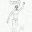

SAK:laisen TEAM Teollisuusalojen ammattiliiton puheenjohtaja Timo Vallittu sanoo, että uuden hallitusohjelman kovin kohta on viiden prosentin alennustavoite kustannuksiin.
Juha Sipilän (kesk.) hallitus linjasi eilen ehdollisia tavoitteita, jotka riippuvat yhteiskuntasopimuksen toteutumisesta. Yhteiskuntasopimus kaatui ennen hallitusohjelman syntyä työajan pidennykseen, johon palkansaajien edustajat eivät suostuneet.
TEAMin mukaan hallitus tekee 30.7. mennessä esityksen toimista yksikkötyökustannusten alentamiseksi ja odottaa työelämän osapuolten sitoutuvan kattavasti esitykseensä 21.8.2015 mennessä.
Vallittu kertoi tänään konkreettisesti, mitä tavoitteen saavuttaminen edellyttää. Hän mainitsee erikseen pekkaspäivistä ja lomarahoista luopumisen.
- Tavoitteen saavuttamiseksi ei ole olemassa helppoja ratkaisuja. Jos tavoite muutetaan käytännön toimiksi, vaihtoehtoja ovat työajan pidentäminen esimerkiksi pekkaspäivistä luopumalla, lomarahojen poistaminen tai joillain sopimusaloilla palveluvuosijärjestelmän merkittävä heikentäminen. En näe juuri muita keinoja, Vallittu totesi torstaina TEAMin lehdistötilaisuudessa.
Yhteiskuntasopimusneuvotteluissa oli esillä työajan pidentäminen sadalla tunnilla vuodessa.
- Palkansaajien näkökulmasta tuollaiset toimet vaikuttavat ylivoimaisen vaikeilta hyväksyä. Sipilän edellinen yritys yhteiskuntasopimukseksi kaatui siihen, ettei palkansaajapuolella ollut valmiutta lähteä työajan pidennykseen. Siinä ei mikään ole parissa viikossa muuttunut. Lomarahojen poistaminen on yhtä vastenmielinen vaihtoehto, sehän merkitsisi ostovoiman alentumista. Minusta näyttää siltä, että vakavana uhkana on kriisi työmarkkinoilla alkusyksyllä, Vallittu sanoo.
Hänen mukaansa hallituksen päätös 200 miljoonan euron leikkauksesta ansioturvaan merkitsee seitsemän prosentin tasoista leikkausta ansiosidonnaisella päivärahalla olevien työttömien etuuksiin.
– Se voidaan toteuttaa vain lyhentämällä ansiosidonnaisen kestoaikaa merkittävästi, alentamalla ansio-osien prosentteja tai nostamalla työttömyysvakuutusmaksuilla rahoitettavaa osuutta ansiopäivärahoista. Mikä tahansa noista on kova isku työttömille, Vallittu sanoo.
Kommentit
Helpoin ja kivuttomin keino kustannusten leikkaamiseen on leikata yli 100 000 euron kokonaisvuosituloista 50 %.
Liian helppoa ja kivutonta Sipilälle?
Ja sieltä saatavissa oleva rahasumma olisi???
Valtava.
Ja yhteiskunnan organisatiot voisivat jatkaa kasvamista kuten aikaisimmillakin vuosikymmenillä.
200 edustajaamme pohtivat välttämättömiä lisätarpeita aamusta iltaan.
Kuinka kauan luulet että tämä porukka ei saisi etätyö keikkoja Viron, jolloin heidän veroprosentti olisi viron verotuksen mukaan. Eli tyypillinen virkamies ajattelua, sillä millä pitää kiinni sellasista joilla on varaa tehdä muutoksia.
Itseasiassa saatava rahasumma ei ole kovinkaan suuri. Valtion tulovero on jo nyt 31,75% 90.000 euron ylittävistä tuloista (vero.fi). Keskimääräinen kunnallisveroprosentti on 19,84% (veronmaksajat.fi), eli tällä hetkellä 100.000 euron ylittävästä osuudesta menee veroa 51,59%. Ehdotuksesi näyttäisi pieneltä veron alennukselta. Vai ehdotitko sitä, että verotettavalle käteen jäävää osuutta verotetaan vielä ylimääräiset 50%, jollin kokonaisveroksi tulisi n. 75,8%?
Kimmo, veit jalat suustani
Tuossa laskelmassais ei ole verotettu kokonaisvuosituloja. Verolainsäädäntömme 800 + sivua iskivät jälleen!
Helpointa olisi Pekkasvapaiden poistaminen, se ei laskisi ansiotasoa ollenkaan.
Kuinka monta Pekkaspäiviä onkaan, sainhan minäkin niitä aikoinaan en muista kuinka monta niitä oli.
Verotuksella leikataan jo nyt enemmän kuin 50 prosenttia yli 100.000 euron palkkatuloista. Pääomatulot ovat kevyemmin verotettuja, niihin on vaan vaieka päästä kiinni, saattavat karata Suomesta kokonaan jos verotetaan paljon ankarammin.
Jotakin tolkkua mielipiteisiin1
Ei ole syytä veroja nostaa ja se asia on tietääkseni jo päätetty. Sieltä otetaan jonne on ilmaista rahaa jaettu.
Entäs ne arkipyhät? Helatorstaista ja loppiaisesta on puhuttu, mutta on niitä muitakin. Uudenvuodenpäivän pitäisi olla työpäivä, sillä onhan sopivaa aloittaa uusi vuosi työnteolla. Samasta syystä itsenäisyyspäivän tulisi olla työpäivä.
Mitä vappuun tulee, niin sitähän sanotaan suomalaisen työn päiväksi. Eikö silloin pitäisi olla töissä? Esimerkiksi Tanskassa vappu on työpäivä. - Entä vappumarssi? No, työläisellä tulee toki olla oikeus osallistua vappumarssiin työajalla.
Sipilän haave: "Suomi itsenäistyi 6.12. lähinnä olevana sunnuntaina vuonna 1917."
On se kumma miten ollaan huolissaan suomalaisten vapaapäivistä, mutta tosiasiallisesti Euroopassa lomaillaan paljon enemmän. Todellisia vapaapäiviä suomalaisilla vähemmän kuin muilla. Kun Suomalaisten vuosilomaa 30 päivää kauhistellaan suureksi, niin todellisia vapaapäiviä on tuosta vain 25. Eurooppalaisittain alle keskiarvon.
Miten vientiteollisuus? Kun muualla euroopassa lomaillaan pitkiä kansallisia lomapäiviä ja kirkollisia pyhiä, Suomessa painetaan töitä. Pitäisikö tätä eroa vielä lisätä? Pyöritellään toimistossa peukkuja kun vastapuoli ei vastaa Euroopassa puhelimeen vaan lomailee.. Suomessa on vain näitä typeriä näennäisiä lomapäiviä, jotka eivät lisää lomapäivämäärää, kuten sunnuntaiksi siirretyt kauppoja ja palveluita sulkevat pyhät.
No jos otetaan vaikka poliitikoilta se 25 pinnaa palkoista pois. Turha odotella mitään "talkoita". Näyttäköön itse mallia.
Niin ja toki mitään vuosikorotuksia ja tarkastuksia ei poliitikkojen palkkoihin tarvita - ovathan he muitakin indeksikorotuksia poistaneet, niin varmasti luopuvat sopuistasti omastaan.
Oiva esimerkki on Sauli Niinistö. Hänhän osallistuu palkkansa alennuksella " talkoisiin"
> Minusta näyttää siltä, että vakavana uhkana on kriisi
> työmarkkinoilla alkusyksyllä, Vallittu sanoo.
Mihinkä sellaista kriisiä oikein tarvitaan? Tai kuinka se kriisi ja työpaikoilta poistuminen asiassa lopulta mitään osapuolta auttaa?
Ei SAK:ta, STTK:ta ja Akavaa tässä minkään pakon eteen olla laitettu, ei ainakaan vielä. Työmarkkinajärjestöillä on täysi oikeus kieltäytyä ehdotetuista vaihtoehdoista, ei siinä mitään mellakoita syksyllä työpaikoilla tarvita.
Taskulaskinta käteen vaan kaikkialla, ja laskeskelemaan että mitkä vaihtoehdot ovat omalta kannalta kaikkein edullisimmat.
Eihän asiassa tarvita elokuulla muuta kuin neuvotteluosapuolilta ilmoitus SSS-miehille:
“Emme halua jatkaa. Pyydämme hoitamaan maan tilannetta
eteenpäin Hallituksen ja Eduskunnan voimin, hallinnollisilla
menetelmillä.”
Nykyisten työpaikkojen säilymistä turvaa parhaiten se, että kilpailukykyämme parannetaan, edes sen 5% edestä, kilpailijamaihin nähden.
Sen vaihtoehtona “hallinnolliset toimet” vain eivät paranna elinkeinoelämän kilpailukykyä yhtään. Ne ovat passiivisia, ja sellaisenaan pystyvät vain alentamaan kuristumassa olevan Valtion menoja.
Kansainvälisten vertailututkimusten mukaan Suomi on kilpailukyvyssä sijalla 4. Mille sijalle pääsemme tuolla 5 % leikkauksella tuotantotyöntekijäin palkoissa?
Selväähän se että työntekijän selkänahasta säästöt kiskotaan.on myös yksinkertaisempi keino, ja luulen kannatusta löytyvän tilanteessa missä käteenjäävää tuloa kavennetaan, Irti Eu:ta ja sen jäsenmaksuista.luulisi menevän tyhmenpienkin jakeluun, koko Eu:ssa oloaika on ollut tavan kansan ryöstämistä, ja kun muistetaan millaisella petoksella meidät vietiin Euroon ja yleensä eu:n luulisi kansan olevankypsä irtaantumiseen
Jos nyt ensin normalisoisivat julkisen sektorin työajat ja lomat oikeiden veronmaksajien tasolle ja tekisivät hieman sopeutusta näin vapautuville työtunneille. Tämän jälkeen ehkä Vartiaisenkin kaipaama työntarjonta alkaisi olla kohdallaan ilman sitä suurta työperäistä muuttoa Afrikan sarvesta.
Jos ay-liike vastustaa kaikkea, pitää myös sitten kantaa vastuu. Jo nyt sadat tuhannet työntekijät ovat "ei poliittisissa" työttömyyskassoissa ja uskon että vauhti vaan kiihtyy. Taidanpa perustaakin sivuston: eroa-ayliikkeesta.fi, jotta saadaan eroaminen yhtä helpoksi kuin kirkosta eroaminen.
Minä olen henkilökohtaisesti sitä mieltä, että jos pekkaspäivät ja lomarahat loppuvat, niin silloin työnantajat saavat varautua sairaslomapäivien rähjädysmäiseen kasvuun, eli otetaan saikkua, se kun on palkallista ja maksetaan vielä kta:n mukaan(keskituntiansio).
Itselläni sairaslomakynnys olisi tosi matala.
Toisaalta taas tämä saattaa ajaa ihmiset siihen pisteeseen, että kannattaako enää tehdä töitä, kun jos sattuu tulemaan jokin meno on pakko ottaa palkaton päivä tai jopa palkaton viikko, varsinkin jos työmatka on sen verran pitkä että siihen täytyy käyttää vielä omaa autoa, minkä pito ei myöskään ole erityisen edullistä nykyaikana.
Kun noilla kansanedustajilla on aika hyvät lomat niin eikö siinäkin säästettäisi kun ei maksettaisi ollenkaan palkkaa niiltä ajoilta kun ovat lomilla.
Tuota sairaslomaa on kaavailtu myös niin, että ensimmäinen sairasloma on palkaton, ja todennäköisesti seuraaviltakaan päiviltä ei saa enää täyttä korvausta. Kylmät arvot jyllää.
Yrittäjä ei saa ensimmäiseltä 9 päivältä senttiäkään. Palkansaajan palkka on sinänsä sairauden osalta turvattu.
Työmarkkinajärjestöjen jäsenmaksun verovähennysoikeus pitää leikata heti pois ja sillä saadaan valtion kassaan 200M€.
Turha luulo, että hallitus tekisi jotain järkevää. Varsinkaan rakenteellisia muutoksia.
Eiköhän nyt olla käyty työläisten/ vähäosaisten kukkarolla aika paljon. Koskas tämä Ek osallistuu kustannuksiin.? Hallitus nyt varmaan luopuu kans palkoistaan,kesäloma lyhennetään ja talvilomat, sopeutuseläkkeet poistetaan,luontaisedut myös, työpaikalla pitää olla,eikä laiteta sihteeriä sinne ja samaan aikaan olla nostamassa jotain kissanristiäis rahaa toisesta paikasta. Kyllä nämät ovat vaatimassa, mutta mistään ei ole itse luopumassa. Helposti saadaan säästöjä/rahaa valtion kirstuun jos halutaan, sieltä mistä ne kuuluisikin tulla.!mistä olisin itse lähtenyt lähestymään ohjelmaa olisi kutakuinkin suunta ollut tämänkaltainen: Olis voitu rikkailta ottaa pois esim: lapsilisät. tiedän muutaman pariskunnan, kun sanoivat, että heidän lapsilisät menee lapsen tilille, kun ei ole tarvetta. toinen perhe taas ei tule toimeen ilman. valtion firmoilta optiot pois vähäksi aikaa.firmojen veronkierrot pois. suuryritysten tuet pois. esim: vigin-line sai avustuksia miljoonan ja samannavuonna yhtiö jakoi osinkoja tasan miljoonan. Silja-line ja viikkarit saavat tietääkseni valtiolta tukea joka vuosi. onko se valtion / yhteiskunnan tehtävä rahoittaa kaupallista alaa.?? ym ym.. miljonaa erilaista vaihtoehtoja oli. mutta silti jämähdetään tähän aina samaan ohjelmaan. toki, eihän nyt rikkaat mene rikkailta ottamaan... tämä on sitä realismia.!! odotin kyllä tältä ohjelmalta paljon enemmän. jäi nyt aika torsoksi. ihan perus leikkausta.
Kannattais varmaan kuitenkin hoitaa työttömyys kuntoon.
Lopettakoot joutenolon. Kansanedustajille kolmas istuntokausi.
Tarkoittaako tämä pekkaspäivien poistaminen sitä, että vastaavasti julkisen sektorin viikkotyöaikaa nostetaan sinne 40h kuten tehtaiden duunareille?
Sen lisäksi julkisen sektorin vuosilomat pitäisi lyhentää samalle tasolle kuin yksityisen sektorin työntekijöiden vuosilomat.
Milloin leikataan kansanedustajien lomia tavallisten kuolevaisten tasolle.?
Sipilä ei tunne AY-liikettä ja sen voimaa.Yleislakon aikaan maanviljelijät alkoi luovutuslakkoon.Tuli ruuasta puutetta.Ei kannata astua tuoreeseen lehmänlantaan,se on liukasta.Ensin julkisen puolen työajat ja lomat yhteneviksi,sitten on aikaa miettiä muuta tekemistä.Nythän ei ole työtä tarjolla,vaikka tekijöitä on vapaana valtavasti.
Ja täällä eräs kellä seuraavanlainen työsopimus.
1) ei pekkaspäiviä
2) ei kesälomia( maksetaan rahana alle kuukauden palkka vuodessa
3) tehdään 7 t viikossa ilmaiseksi
4) ei iltalisiä ja pyhälisiä ei yölisiä
5) luonnollisesti ei myöskään " lomarahoja"
Mistä tästä enää otetaan pois
Kyllä ihmettelen jos Ammattiyhdistysliike antaa hallituksen alkaa määrätä myös Ayliikettä. Siitä polusta ei tule ikinä loppua. Jos yhteiskuntasopimus toteutuisi, niin uskon että alkaa liitoista poistuminen yksityiseen. Nyt jos koskaan täytyy näyttää liittojen voima!
Ensimmäisenä julkisten alojen loma-ajat sekä työajat yhden vertaiseksi yksityisen puolen kanssa. Ei ole oikeustajun mukaista että julkisen puolen yli 500000 työntekijällä on järeistään pidemmät lomat kuin yksityisellä puolen. Siitä voi matemaatikko laskea kuinka tuottavuus parantuisi julkisella puolella mikäli siirryttäisiin 7+ viikosta -> 5 viikon lomiin, joka on normi lomien pituudessa yksityisellä puolen.
Miksi tästä aiheesta ei edes keskustella julkisuudessa? Jos kärjistetään - niin tälläinen eriarvoisuus rikkoo Suomen perustuslaen 1§ momenttia ”…edistää oikeudenmukaisuutta yhteiskunnassa” .
Tässä vielä aiheesta taloussanomien juttu:
http://www.taloussanomat.fi/tyo-ja-koulutus/2011/07/14/virastot-tyhjilla...
Kansa valitse selvästi oikeiston ja jopa näytti selvää näkemyseroa vasemmistoon. Sen mukaan pitää mennä ja nyt näytetään menevän. Jos AY-liikkeet päättävät yleislakon tms. voimalla ajaa vasemmistopolitiikkaa on se täysin demokratian vastaista ja kammoksuttavaa koska heitä kansa ei valitse. Koko ulkoparlamettaarinen valta pitää suitsia.

Jos työttömyysturvaa leikataan saavutettu hyöty on 0%. Elinkustannusminimit ovat aika vakiot ja ainakin itselläni (ensi kertaa elämässäni työtön työnhakija) käy niin, että peruspäivärahalle siirryttäessä joudun siirtymään sossun luukulle hakemaan toimeentulotukea. Kokonaiskulu valtiolle/kunnalle pysyy tasan ennallaan ja sopivasti pelaamalla vielä kasvaa. Tämän tajuamisen ei pitäisi tarvita edes akateemista koulutusta. Mielestäni järkevintä olisi ensin pistää katto ansiosidonnaiselle päivärahalle, itse saan sitä puhtaana n. 1100 euroa/kk. Onneksi en asu yksin. Mielestäni sopiva yläraja olisi 2000 euroa. Vastaavasti voitaisiin työttömyys-vakuutusmaksua periä vain 2500 euron tuloon saakka, sen yli menevästä sitä ei otettaisi, koska myös etu päättyy siihen.
hallituksen ja eduskunna palkat puolitaa,kaikki luotais edut pois.
halituksen jäseniltä valtion autot pois,oma auto käytöön ja matka kulut samalailla kun normaali työ väellä.Kaikilta yli 10000€ tienaavilta lapsilisät,asunto laina korot pois,sijotus asunnoille 80%vero ,yli 40000€ maksaneille autoille ja muille luksus tuoteille myös 80% vero.Asunoille pääseudulla 250000 ja mualla150000€ maksavat asunnot myös lisä verolle.Pääministerin ja Naantalin kulta ranta myyntiin,nistä sais hyvän tuoton.Pakolaisia ei tarvitse otta, vaan viedään siellä asuville Suomessa valmistettuja tuoteita ja saadaan työtä tänne.Pien tuloiset,työttömät.pienet eläkeet sais olla verottomia ja korotaa sille tasolle että elää sillä.Yli 10000€ tienaavat sais maksaa veroa ainakin 70%,silti jäis käyttö rahaa.Osingoista sais maksaa veroa siten että1€ menisi veroa 80%.Kyllä näitä paikkoja on joista voitais saada valtiolle tuloja ,eikä taris aina se pien tuloinen.
Voisiko yksityisellä siirtyä samaan kuin julkisella puolella eli että klo.7.00-20.00 tehtävästä työstä ei koskaan makseta ylityökorvauksia? Eli klo.16 jälkeen tehtävistä tunneista saisi vapaata, sillä voisi vaikka käydä hammaslääkärissä tai mennä lääkärillä käymään. Tupakoitsijat voisivat esim.olemalla töissä klo.18-20 ansaita jopa 12 tupakkataukoa jotka voisi pitää jos työmaalla on hiljaisempaa tai vaikka soittaakseen henkilökohtaisen puhelun, sopimalla tästä työnantajan kanssa.
Kunta-alan työntekijöistä on 4/5 naisia. Kun ylityökorvaukset poistetaan myös yksityiseltä sektorilta työajalla klo.7-20, palkkakustannukset ja tuloerot tasaantuvat. Tasa-arvo lisääntyy ja sukupuolijakaumat tasaantuvat eri sektoreilla. Tämän jälkeen voidaan tarkastella myös lomaetuuksien tasaantumista.
Nyt Elinkeinoelämän keskusliiton edustajat ja Sipilä laskeskelemaan paljonko tämä uudistus laskisi kustannuksia. Myös naiset olisivat tyytyväisiä kun tämä parantaisi tasa-arvoa ja tasaisi tuloeroja.
Mitenkähän se Sipilä olisi, jos ministereiden palkkoja leikattaisiin 40% kiansanedustajien palkkaa 30% valtio-omisteisten laitoksien johtajille ei mitään hyvänmiehenlisiä. eikä optioita. Puoluetuki pois, henkilökohtaiset avustajat maksaa avustettava itse. Te olette luoneet itsellenne kultaisen oksan, jolla istutte ja luulette olevanne kaiken yläpuolella. Kuinka kauan te todella uskotte voivanne kyykyttää ja polkea maanrakoon tavallista kansalaista. Te uskotte sen onnistuvan entisen mallin mukaan hamaan tulevaisuuteen, mutta minä annan neuvon, että siinä vaiheessa kun se kyykytetty alkaa hymyilemään, kannattaisi alkaa vähän funtsimaan.
En voi olla kuin täysin tyytyväinen hallituksen säästälinjaan. Kerrankin hyvä pääministeri. Hyvä Sipilä!